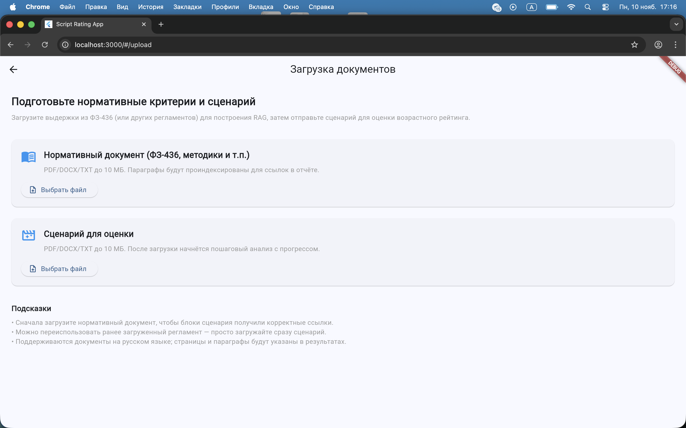
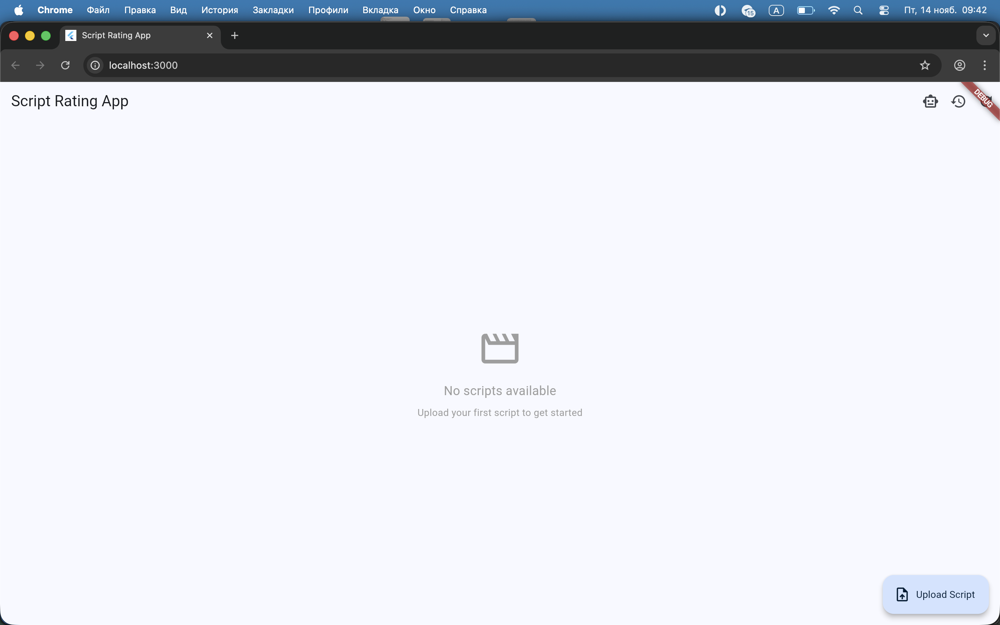
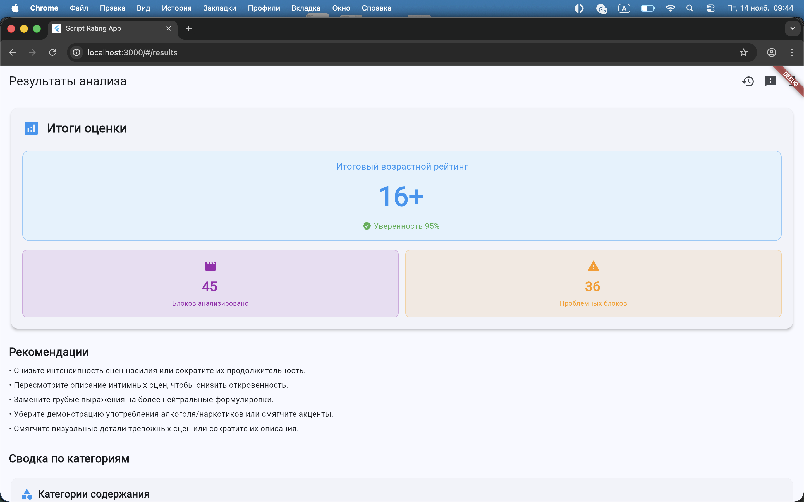
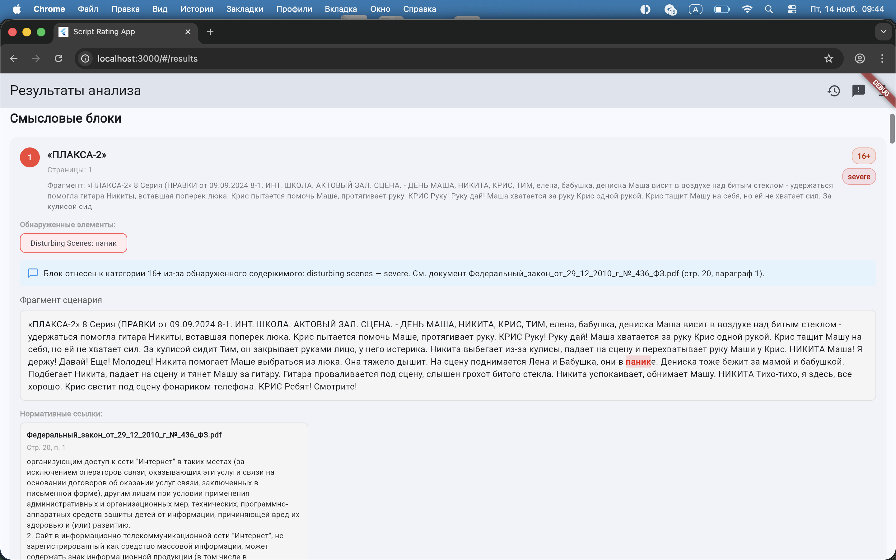
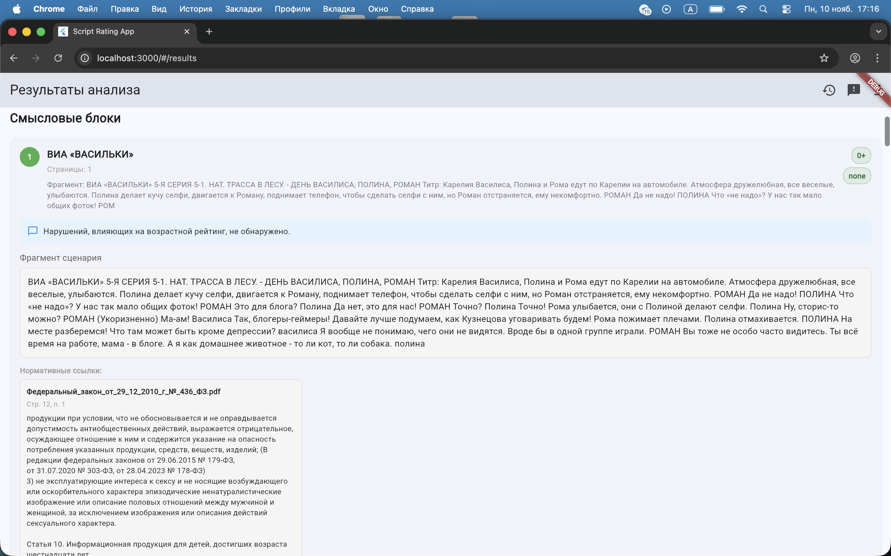
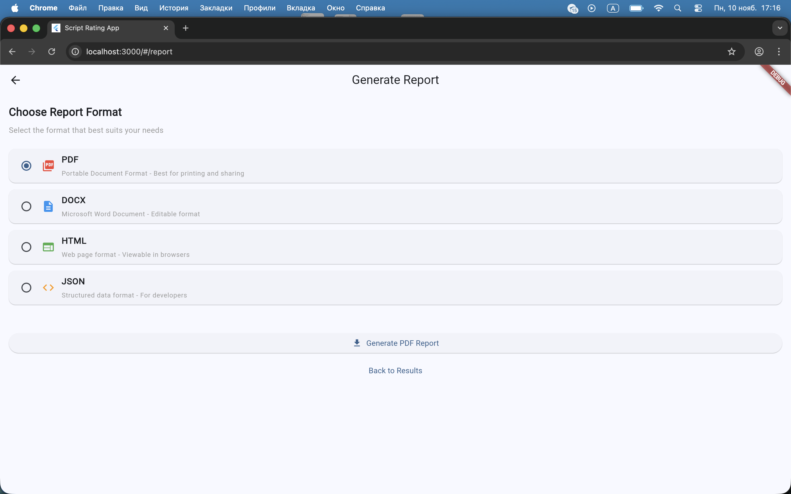
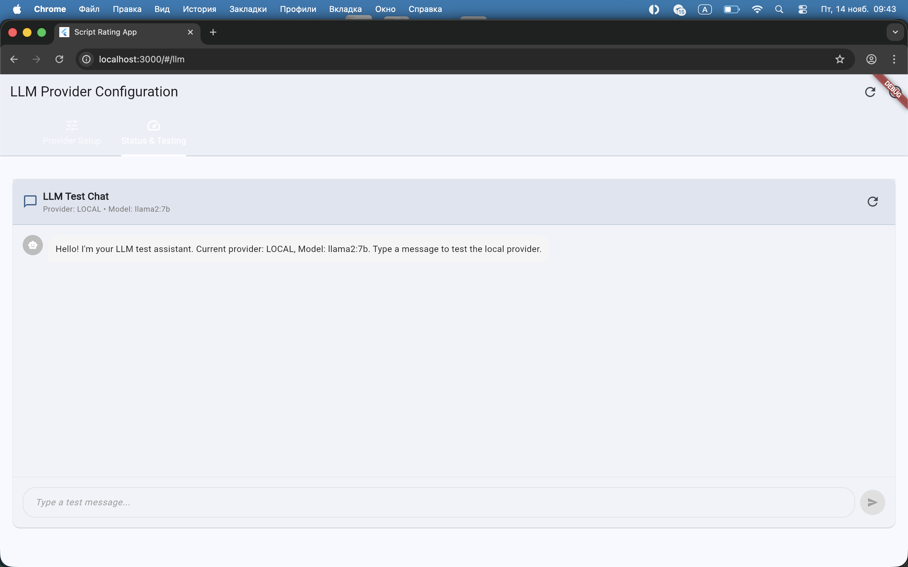

ScriptRating
Автоматический рейтинг киносценариев по ФЗ‑436
Слайд 1 / 13
- Автономная офлайн‑система для анализа сценариев на соответствие Федеральному закону №436‑ФЗ.
- Поддержка PDF/DOCX, автоматическое разбиение на сцены и классификация по 5 категориям риска.
- Расчёт возрастного рейтинга (0+/6+/12+/16+/18+) и генерация отчётов с юридическими обоснованиями.
- Фокус на приватности, воспроизводимости и прозрачности решений.
Контекст
Проблема и регуляторная среда
Слайд 2 / 13
- Ужесточение требований к детскому и семейному контенту в рамках ФЗ‑436.
- Ручная экспертиза сценариев: долго, субъективно и дорого для студий и площадок.
- Разрозненные инструменты: анализ текста отдельно от юридической проверки.
- Нет стандартизированного процесса оценки и документирования решений.
ScriptRating закрывает этот разрыв, соединяя текстовый анализ, юристов и продюсеров в едином контуре.
Интерфейс
Экран загрузки сценария
Слайд 3 / 13
- Загрузка сценариев в форматах PDF и DOCX с сохранением структуры.
- Выбор целевого возрастного рейтинга и типа анализа.
- Отображение статуса обработки и базовых параметров сценария.
- Интуитивный интерфейс для редакторов, продюсеров и юристов.
Скриншот интерфейса
Экран загрузки сценария
Пример UI с выбором файла, настройками и запуском анализа.

Результаты
Главный экран анализа сценария
Слайд 4 / 13
- Визуальный таймлайн сцен с цветовой кодировкой нарушений.
- Быстрый переход к любой сцене и её тексту.
- Отображение итогового возрастного рейтинга и краткого резюме.
- Интеграция с детализацией по категориям риска и тяжести.
Скриншот интерфейса
Экран анализа сценария
Основной экран с общей картиной соответствия ФЗ‑436.

Результаты
Результаты анализа — вариант 1
Слайд 5 / 13
- Первый вариант представления результатов анализа по сценарию.
- Сводка нарушений и ключевых показателей по ФЗ‑436.
- Подходит для общего обзора перед детальной проработкой.
Скриншот интерфейса
Результаты анализа — вариант 1
Первый вариант экрана с результатами и распределением категорий нарушений.

Результаты
Результаты анализа — вариант 2
Слайд 6 / 13
- Второй вариант отображения результатов для детального разбора.
- Удобен для поиска конкретных проблемных сцен и категорий.
- Фокус на детализации и навигации по результатам.
Скриншот интерфейса
Результаты анализа — вариант 2
Второй вариант экрана с результатами и фильтрами по категориям.

Результаты
Результаты анализа — вариант 3
Слайд 7 / 13
- Третий вариант представления результатов анализа.
- Подходит для быстрой визуальной оценки распределения нарушений.
- Дополняет остальные виды представления результатов.
Скриншот интерфейса
Результаты анализа — вариант 3
Третий вариант экрана с визуализацией нарушений по сценарию.

Отчёты
Экспорт результатов и отчётность
Слайд 8 / 13
- Экспорт результатов в форматы PDF, DOCX и JSON.
- Отчёты в стиле «Parents Guide» с детализацией по сценам.
- Ссылки на статьи ФЗ‑436 и нормативные документы внутри отчёта.
- Готовность материалов для регуляторов, юристов и внешних партнёров.
Скриншот интерфейса
Экран экспорта отчёта
Настройка формата и состава итогового отчёта по сценарию.

LLM интеграции
Панель управления LLM‑провайдерами
Слайд 9 / 13
- Централизованная панель настройки провайдеров LLM и моделей.
- Статусы подключения, лимиты и диагностические сообщения.
- Быстрая проверка доступности моделей для анализа сценариев.
- Гибкое конфигурирование для локальных и облачных моделей.
Скриншот интерфейса
LLM Dashboard
Экран настройки и мониторинга провайдеров и моделей LLM.

Real‑time
LLM‑чат для проверки идей
Слайд 10 / 13
- Интерактивный чат с LLM для обсуждения конкретных сцен и правок.
- Сценаристы и редакторы могут уточнять интерпретацию сложных фрагментов.
- Тестирование качества подключённых моделей прямо из интерфейса.
- Подготовка к будущим возможностям real‑time сопровождения написания сценария.
Скриншот интерфейса
LLM‑чат ScriptRating
Экран диалога с моделью для проверки контента и гипотез.

Архитектура
Чистая архитектура ScriptRating
Слайд 11 / 13
- Слои Clean Architecture: Presentation → Interface Adapters → Application → Domain → Infrastructure.
- Flutter UI взаимодействует с FastAPI backend через REST/WebSocket.
- Ядро состоит из Parser, Segmenter, Rule Filters, LLM Classifier, Rating Engine, Report/History/Feedback/RAG модулей.
- Хранение: база истории анализов, отчёты, векторное хранилище, модели.
Схема
Слои архитектуры
Упрощённая схема слоёв и ключевых компонентов системы.
Flutter UI
Screens & Widgets
Screens & Widgets
↓
FastAPI
Controllers & Routes
Controllers & Routes
↓
Use Cases
Analysis Manager, Report Builder
Analysis Manager, Report Builder
↓
Domain
Rating Engine, Entities
Rating Engine, Entities
↓
Infrastructure
Parsers, LLM, Vector Store, DB
Parsers, LLM, Vector Store, DB
User Flow
Пользовательский поток: от загрузки до отчёта
Слайд 12 / 13
- Пользователь загружает сценарий и (опционально) нормативные документы.
- Backend выполняет парсинг, сегментацию и анализ с RAG‑ссылками.
- UI показывает прогресс, по мере готовности — блоки и сцены с рейтингами.
- После ревью формируется финальный отчёт и сохраняется история анализа.
Схема
User Flow
Поток действий пользователя и обратной связи.
1. Upload
Script & Criteria
→
Script & Criteria
2. Analysis
Parser, Segmenter, LLM
→
Parser, Segmenter, LLM
3. Review
Blocks & Scenes
→
Blocks & Scenes
4. Report
Export & Sharing
→
Export & Sharing
5. Feedback
Corrections → RAG
Corrections → RAG
RAG Pipeline
Схема RAG‑конвейера обоснований
Слайд 13 / 13
- Корпус: ФЗ‑436, методички, примеры сцен и пользовательские корректировки.
- Этапы: нормализация → эмбеддинги → векторный индекс (FAISS/Qdrant).
- Запросы: текст сцены + категория → поиск top‑K выдержек → формирование prompt.
- LLM возвращает оценку и объяснение с цитатами; коррекции пользователя обновляют корпус.
Схема
RAG Pipeline
Схема от корпуса нормативных текстов до объяснений с цитатами.
Corpus
Law 436‑FZ, Guides, Feedback
→
Law 436‑FZ, Guides, Feedback
Normalize & Embed
Text Cleaning, E5 Embeddings
→
Text Cleaning, E5 Embeddings
Vector Index
FAISS / Qdrant
FAISS / Qdrant
Scene + Category
Query
→
Query
Top‑K Passages
Similarity Search
→
Similarity Search
Augmented Prompt
Context + Scene
→
Context + Scene
LLM
Classification + Reasoning
→
Classification + Reasoning
Result
Rating + Citations
Rating + Citations